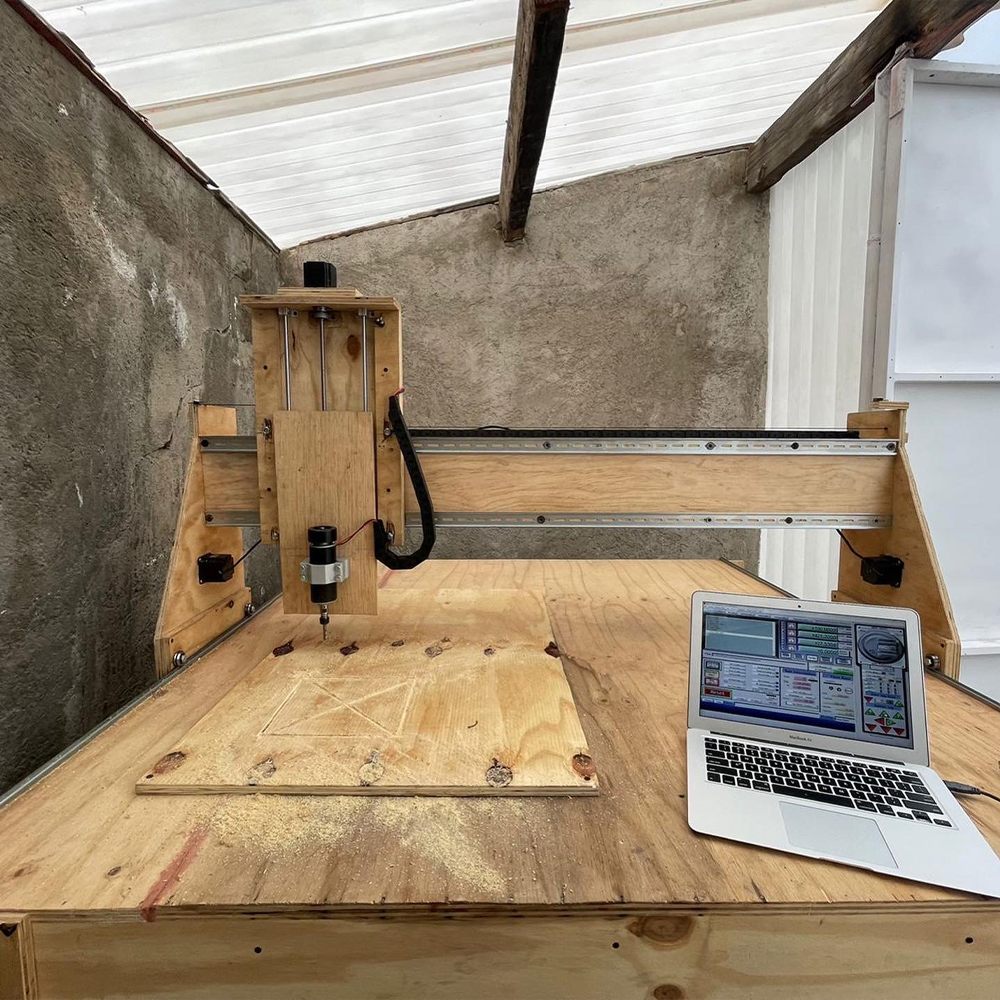

¿De que trata?

Este es el proyecto al que más afecto le tengo ya que las máquinas CNC son mis dispositivos electromecánicos favoritos en todo el mundo y por fin después de varios años de haberlas conocido e incluso haber tratado de replicarlas a pequeña escala con dos de mis proyectos previos eggbot y plotter cnc, surgió la oportunidad de hacerla a gran escala con ayuda de mi amigo y exprofesor de robótica Erick García.
La idea era construir la máquina más grande, precisa y económica que pudieramos pero que a su vez fuera capaz de cortar las piezas que necesitábamos para construir robots (maderas, policarbonato, aluminio, plásticos duros, etc.) Por ello decidimos hacer la estructura entera de triplay de 3/4, usar rieles din y baleros en forma de v para el movimiento lineal del eje "x" e "y" y finalmente usamos ejes acerados y baleros lineales para el movimiento del eje "z". Los componentes activos del sistema eran motores NEMA 23 colocados con una banda tanto para el eje "x" como "y" y un tornillo sin fin para el eje z.
El programa para su funcionamiento es Mach3 donde podemos controlar la máquina de forma manual, en adición se puede usar una línea de comandos para enviar instrucciones una a una y lo mejor de todo es que podemos importar archivos de texto con todas las instrucciones para correr el corte que necesitemos, estos son generados a partir de archivos DXF en el programa VCarve y a su vez estos son creados usando herramientas de diseño como photoshop o softwares de modelado 3D como SolidWorks.
Con esta máquina hemos creado muchas piezas sobre pedido para decoraciones de negocios locales e incluso lo hemos usado para manufacturar las piezas de mas de 10 robots para la competencia de FRC a lo largo del país.